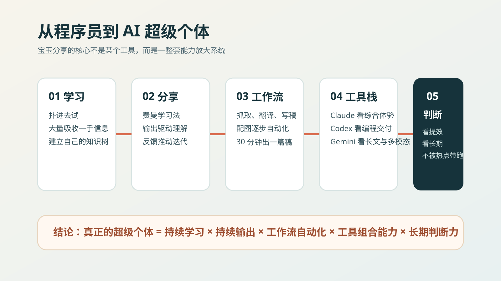
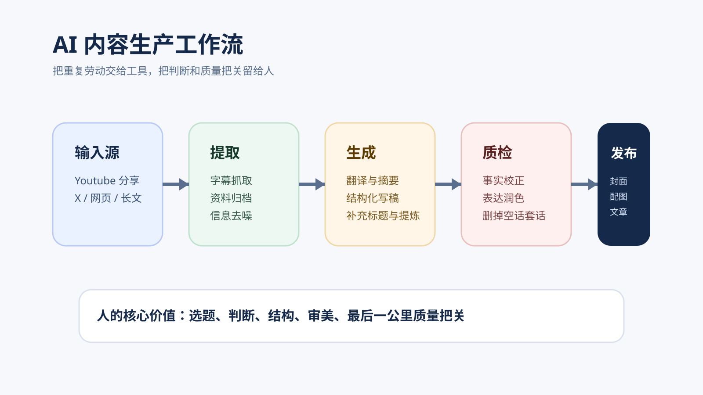
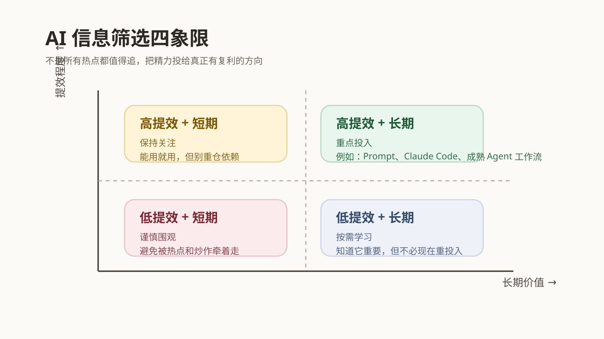

听完宝玉这场分享，我终于看清了 AI 时代最稀缺的能力
导读
这不是一篇单纯的工具盘点，而是一套关于 AI 时代个人成长路径的拆解。
如果你关心这三个问题，这篇文章值得读完：怎么持续学习、怎么把 AI 接进工作流、怎么避免被热点带着跑。
最近听了宝玉老师的一次内部分享。
整场下来，我脑子里一直有一句话在转：
AI 时代真正拉开人与人差距的，不是你知不知道新模型，而是你有没有把 AI 变成自己的能力放大器。
很多人现在对 AI 的状态很像两种极端。一种人每天都在追热点，收藏夹里堆满了“未来已来”，但真正落到自己工作里的东西很少；另一种人则越来越焦虑，总觉得 AI 很强，却又不知道自己到底该从哪里开始。
宝玉这场分享最有价值的地方恰恰在于，它没有停留在“工具盘点”，而是把一个问题讲透了：在 AI 时代，一个人到底怎么才能变强？
先说结论：未来最有竞争力的人，不一定是最懂技术的人，但一定是最会把 AI 变成自己系统一部分的人。
1. 最值得学的不是他的结果，而是他的路径
宝玉本身是软件工程出身，写过《软件工程之美》这样的专栏。真正的变化，发生在 ChatGPT 爆火之后。别人还在围观的时候，他已经开始一头扎进去学，花大量时间去试、去看、去拆、去写。
大多数人面对新技术时，默认动作是“再等等看”；真正跑出来的人，默认动作是“先用起来再说”。前者想先获得确定性，后者先用行动换确定性。
更重要的是，哪怕已经被很多人视作 AI 领域的大 V，他依然会说自己还有很多不懂的地方。AI 时代特别重要的底层心态其实就是：变化太快，谁都没资格停止学习。

2. 让人越学越快的，不是输入，而是边学边输出
很多人总觉得，等自己学明白了、研究透了、足够系统了，再开始写、开始讲、开始分享。但现实往往是，等到那个时刻，已经没有然后了。
宝玉的方式刚好相反。他是把分享当成学习过程的一部分，而不是学习完成后的展示。这背后其实就是费曼学习法：接触新知识，尝试讲清楚，在讲不清的地方发现漏洞，再用反馈迭代理解。
真正值钱的，不是你看了多少，而是你能不能把看到的东西重新组织成自己的理解。
3. 他不是在刷信息，而是在搭一个个人情报系统
宝玉会长期在 X 上花大量时间，但那不是随便刷刷。他会关注足够多的 AI 相关博主，对高质量内容积极互动，把值得深挖的内容先收藏起来，再利用碎片时间收集、利用整块时间整理。
表面上是在用平台，实际上是在训练平台的算法为自己服务。AI 时代最可怕的问题不是信息不够，而是信息太多。你真正需要的，不是多看一点，而是建立一套稳定筛选高价值信息的机制。
4. AI 最猛的地方，是替你接管整条生产线
最早的时候，宝玉已经会自己做浏览器插件，再配合 ChatGPT 来做长文分段翻译。那个阶段已经比纯手工高效很多，但本质还是“人推着工具干活”。
而现在，随着 Claude、Gemini 和各种 Agent 工具的成熟，整个流程已经发生了质变：不再是“我用一个工具帮我省一点力”，而是“我把整条链路串起来，让工具自己往前流”。

拿视频内容写文章这件事来说，现在可以是这样一条线：先拿到完整字幕稿，再做分析、提炼和结构化写作，人做最后的事实核查和表达润色，最后补封面和信息图。
这意味着人的价值开始从“亲手做每一步”转向“定义流程、做关键判断、控制最后质量”。以后真正稀缺的，不是“能不能写”，而是你能不能选题、搭结构、定标准、做最后的价值判断。
你可以直接借鉴的工作流思路
信息获取 → 内容提取 → 结构化生成 → 人工质检 → 配图发布。人做判断，AI 做执行，这是最值得尽快养成的默认模式。
5. 对程序员冲击最大的，是“会做事”的定义变了
宝玉提到，很多复杂编程任务，AI 现在已经能做得相当不错，甚至在不少场景里，已经超过很多程序员。刺耳，但现实。
过去大家默认，“自己手写出来”本身就是实力证明。但在 AI 时代，真正应该被重新评价的，不是你手写了多少行代码，而是你能不能让 AI 先给出高质量初版，能不能迅速判断方案对不对，能不能把重复步骤沉淀成脚本和模板。
这个规律不只适用于编程，也适用于字幕翻译、资料整理、研究分析、文章写作。凡是流程清晰、步骤重复、规则可总结的任务，都会优先被 AI 吞掉。
6. 一个很朴素但非常有效的判断框架
面对每天冒出来的新模型、新 Agent、新概念，最容易出现的状态就是：看什么都想学，看什么都怕错过。
宝玉给的那个四象限框架特别有用。判断一个东西值不值得投入，只看两个问题：它对生产力提升大不大？它的价值是短期的还是长期的？

真正值得重投入的，是那些既能立刻提高效率，又有长期复利价值的东西。比如 Prompt Engineering、Claude Code、成熟的 Agent 工作流，都属于学了就能马上用，而且不会很快过期的能力。
在 AI 时代，人不是输在看得少，而是输在把太多注意力浪费在不值得的东西上。
一个简单的判断方法：先问“它能不能立刻提升我的生产力”，再问“它是不是 3 个月后还值得继续投入”。两项都满足，再重仓。
7. 工具重要，但更重要的是按任务组装能力
分享里当然也讲了很多具体产品，但我听下来最大的感受是：宝玉对工具的态度非常务实。不是“谁是唯一最强”，而是“谁最适合哪段任务”。
通用对话和综合体验，Claude 很强；编程生成和稳定性，Codex 很能打；长上下文处理和部分创作场景，Gemini 很有优势。谁擅长哪一段，就把哪一段交给谁。人负责总控和裁决，工具负责分段执行。
8. 未来最稀缺的能力，反而越来越像“人”
AI 会持续放大个体能力，但不会平均地替代所有事情。越是规则明确、边界清晰、流程化程度高的工作，越容易被 AI 吃掉；越是涉及真实需求理解、复杂沟通、产品判断、审美取舍、商务推进的事，人越重要。
所谓“超级个体”，并不是一个人包揽一切，而是一个人能借助 AI，把原本需要一个小团队协同完成的事情快速做起来。
未来真正有竞争力的人，一定是既懂得把 AI 工具化，也没有丢掉人本身核心能力的人。
最后，浓缩成 5 条最值得立刻去做的事
- 不要只看 AI 内容，尽快找一个真实工作场景上手。
- 不要等学会了再输出，把分享本身当成学习闭环。
- 不要迷信单一模型，开始为不同任务配置不同工具。
- 不要被热点牵着跑，用“提效程度 + 持久价值”判断是否投入。
- 不要只卷执行效率，持续强化产品理解、沟通协作和判断力。
如果你也是程序员、内容创作者，或者正在寻找下一阶段的个人增长方式，那我觉得宝玉这场分享真正提醒我们的只有一句话：
AI 不是替你工作，而是逼你升级工作方式。
最后想说
真正决定你上限的，不再只是你亲手做了多少，而是你如何学习、如何判断、如何组织流程，以及如何把这些能力沉淀成自己的系统。